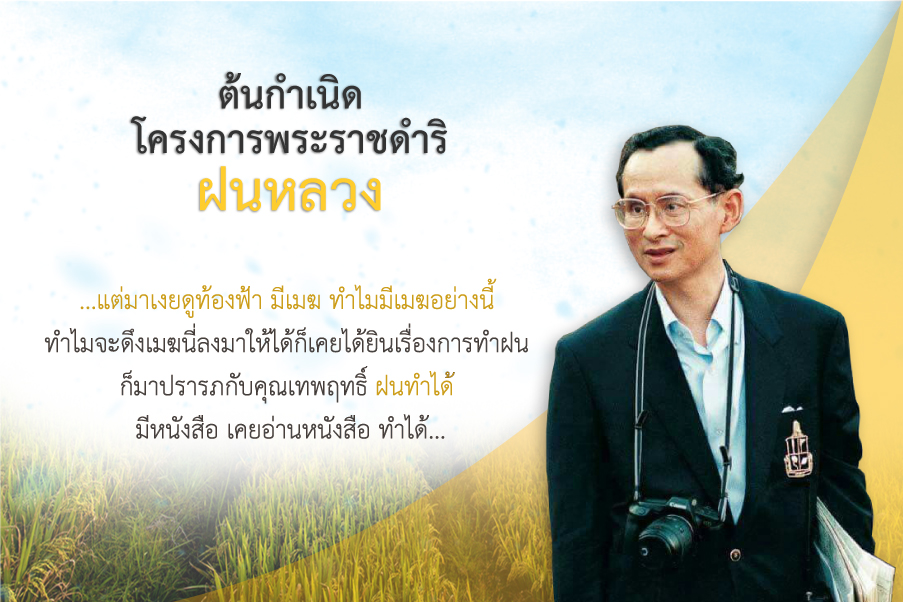
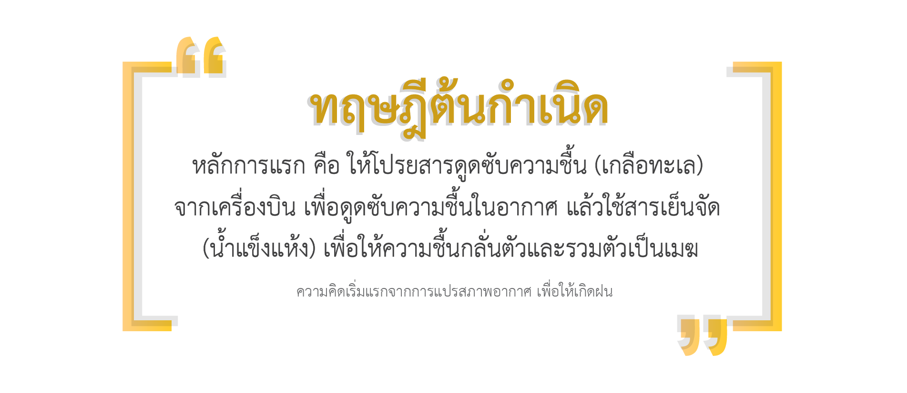
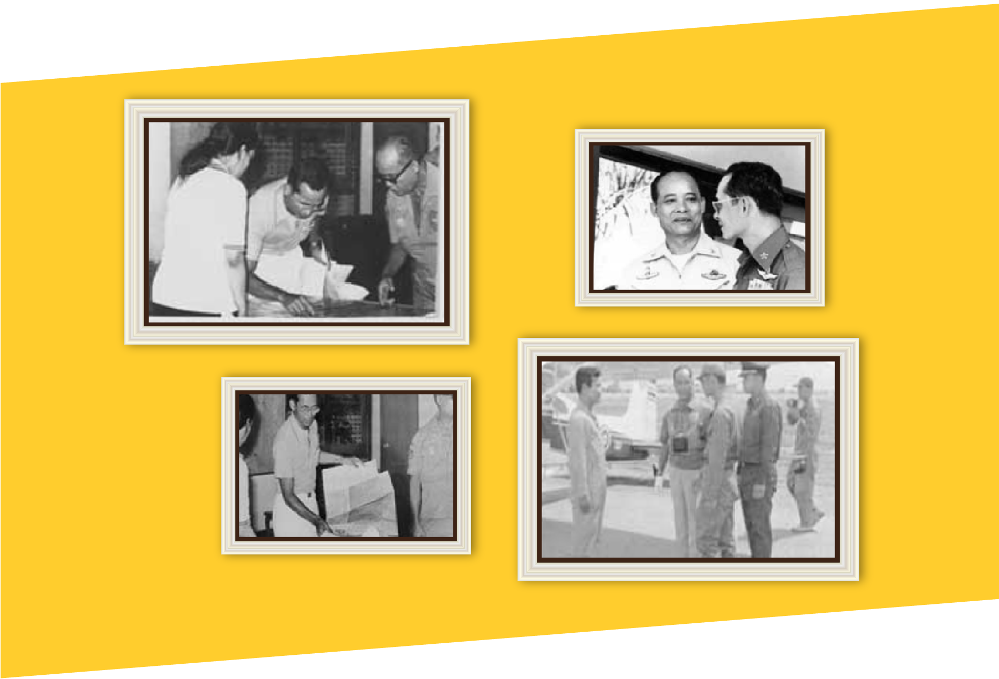

โครงการฝนหลวง
ประวัติความเป็นมา

โครงการพระราชดำริฝนหลวง เกิดขึ้นจากพระราชดำริส่วนพระองค์ ในพระบาทสมเด็จพระบรมชนกาธิเบศร มหาภูมิพลอดุลยเดชมหาราช บรมนาถบพิตร
เมื่อคราวเสด็จพระราชดำเนินเยี่ยมราษฎรในพื้นที่แห้งแล้งทุรกันดาร ๑๕ จังหวัด ในภาคตะวันออกเฉียงเหนือ ระหว่างวันที่ ๒-๒๐ พฤศจิกายน พ.ศ.๒๔๙๘
ในวันจันทร์ที่ ๑๔ พฤศจิกายน พ.ศ.๒๔๙๘ เสด็จพระราชดำเนินโดยรถยนต์เดลาเฮย์ ซีดานสีเขียว จากจังหวัดนครพนมไปจังหวัดกาฬสินธุ์ ผ่านจังหวัดสกลนครและ เทือกเขาภูพาน
ได้ทรงรับทราบถึงความเดือดร้อน ทุกข์ยากของราษฎร และเกษตรกรที่ขาดแคลนน้ำอุปโภคบริโภคและการเกษตร เมื่อเสด็จพระราชดำเนินกลับถึงกรุงเทพมหานคร
ทรงพระกรุณาโปรดเกล้าฯ ให้หม่อมราชวงศ์เทพฤทธิ์ เทวกุล วิศวกรและนักประดิษฐ์ควายเหล็กที่มีชื่อเสียงเข้าเฝ้าฯ แล้วพระราชทานแนวความคิดนั้นแก่หม่อมราชวงศ์เทพฤทธิ์ เทวกุล
ทฤษฎีต้นกำเนิด

พระบาทสมเด็จพระปรมินทรมหาภูมิพลอดุยเดช ยังทรงใช้เวลาอีก 14 ปี ในการวิเคราะห์วิจัย ทบทวนเอกสาร รายงานผลการศึกษาและข้อมูลต่างๆ
พระราชทานให้ หม่อมราชวงศ์เทพฤทธิ์ เทวกุล เพื่อประกอบการค้นคว้าทดลองมาโดยตลอด
จาก พ.ศ. 2498 เป็นต้นมา ทรงศึกษาค้นคว้าและวิจัยทางเอกสาร ทั้งด้านวิชาการอุตุนิยมวิทยา และการดัดแปรสภาพอากาศ ซี่งทรงรอบรู้และเชี่ยวชาญ เป็นที่ยอมรับทั้งในและต่างประเทศ
จนทรงมั่นพระทัยจึงพระราชทานแนวคิดนี้แก่ หม่อมราชวงศ์เทพฤทธิ์ เทวกุล ผู้เชี่ยวชาญในการวิจัยประดิษฐ์ทางด้านเกษตรวิศวกรรม ของกระทรวงเกษตรและสหกรณ์ขณะนั้น
ในปีถัดมาและทรงพระกรุณาโปรดเกล้าโปรดกระหม่อม ให้หาลู่ทางที่จะทำให้เกิดการทดลองปฏิบัติการในท้องฟ้าให้เป็นไปได้
การทดลองในท้องฟ้าเป็นครั้งแรก

จนถึงปี 2512 กระทรวงเกษตรและสหกรณ์ ได้จัดตั้งหน่วยบินปราบศัตรูพืชกรมการข้าวและพร้อมที่จะให้การสนับสนุนในการสนองพระราชประสงค์
หม่อมราชวงศ์เทพฤทธิ์ เทวกุล จึงได้นำความขึ้น กราบบังคมทูลพระกรุณาทรงทราบว่า พร้อมที่จะดำเนินการ ตามพระราชประสงค์แล้ว ดังนั้นในปีเดียวกันนั้นเอง
ทรงพระกรุณาโปรดเกล้าฯ ให้ทำการทดลองปฏิบัติการจริงในท้องฟ้าเป็นครั้งแรก เมื่อวันที่ 1-2 กรกฎาคม 2512 โดยกระทรวงเกษตรและสหกรณ์แต่งตั้งให้ หม่อมราชวงศ์เทพฤทธิ์ เทวกุล
เป็นผู้อำนวยการโครงการ และหัวหน้าคณะปฏิบัติการทดลองเป็นคนแรก และเลือกพื้นที่วนอุทยานเขาใหญ่เป็นพื้นที่ทดลองเป็นแห่งแรกโดยทดลองหยอดก้อนน้ำแข็งแห้ง (dry ice หรือ solid carbondioxide)
เข้าไปในยอดเมฆสูงไม่เกิน 10,000 ฟุต ที่ลอยกระจัดกระจายอยู่เหนือพื้นที่ทดลอง ในขณะนั้น ทำให้กลุ่มเมฆ ทดลองเหล่านั้น ขนาดไม่เกิน 1 ลูกบาศก์นิ้ว มีการเปลี่ยนแปลงทางฟิสิกส์ของเมฆ
อย่างเห็นได้ชัดเจนเกิดการกลั่นรวมตัวกันหนาแน่น และก่อยอดสูงขึ้นเป็นเมฆฝนขนาดใหญ่ในเวลาอันรวดเร็วแล้วเคลื่อนตัวตามทิศทางลมพ้นไปจากสายตาไม่สามารถสังเกตได้
เนื่องจากยอดเขาบัง แต่จากการติดตามผลโดยการสำรวจทางภาคพื้นดิน และได้รับรายงานยืนยันด้วยวาจาจากราษฎรว่า เกิดฝนตกลงสู่พื้นที่ทดลองวนอุทยานเขาใหญ่ในที่สุด
นับเป็นนิมิตหมายบ่งชี้ให้เห็นว่าการบังคับเมฆให้เกิดฝนเป็นสิ่งที่เป็นไปได้